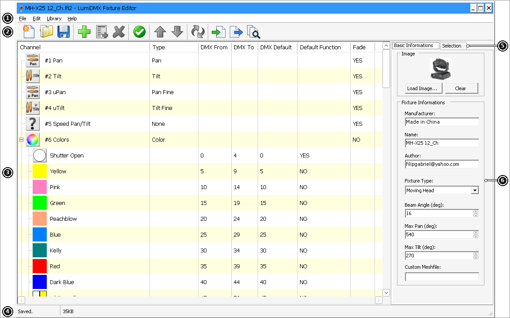
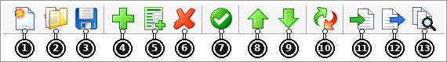
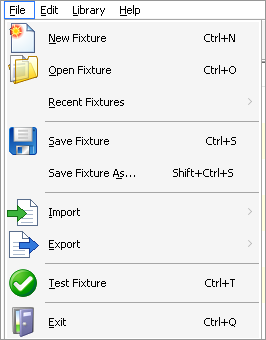
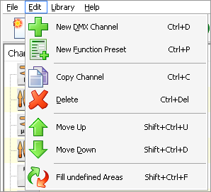

For: Full
The window shows one profile. Its title is the file name of the profile, then LumiDMX Fixture Editor.

The editor with the profile of a moving head open.
| 1 | The menus - File, Edit, Library, Help (below). |
| 2 | The toolbar - the commands used most (below). |
| 3 | The list - the channels of the fixture in their DMX order, each with the presets under it. A click selects a channel or a preset; [-] / [+] closes or opens the presets of a channel. See Channels and presets. |
| 4 | The status bar - Saved. or not saved!, and the size of the file. |
| 5 | The two pages - Basic Informations: the fixture itself; Selection: the channel or the preset selected in the list. |
| 6 | The page shown - here Basic Informations. See Fixture information and pictures. |

| 1 | New Fixture - an empty profile. | 8 | Move Up - the selected channel (or the channel of the selected preset) one place up. |
| 2 | Open Fixture - opens a .lfi2 or .lfi. |
9 | Move Down - one place down. |
| 3 | Save Fixture - Test, then save (see Test and Save). | 10 | Fill undefined Areas - presets for the DMX values of the channel that no preset covers. |
| 4 | New DMX Channel - a channel at the end. | 11 | Import - a profile from a manual, QLC+, Open Fixture Library or GDTF (see Import). |
| 5 | New Function Preset - a preset in the selected channel. | 12 | Export - report, HTML, PDF, pictures, JSON (see Export). |
| 6 | Delete - the selected channel or preset. | 13 | Check against the library - see Check against the library. |
| 7 | Test Fixture - looks for problems. |
The buttons that cannot do anything for the selection are grey (for example New Function Preset when nothing is selected).


The menus File and Edit.
| Menu | Command | Keys |
|---|---|---|
| File | New Fixture | Ctrl+N |
| Open Fixture | Ctrl+O | |
| Recent Fixtures - the last 8 profiles opened or saved | ||
| Save Fixture | Ctrl+S | |
| Save Fixture As... | Shift+Ctrl+S | |
| Import, Export - the same lists as the toolbar's buttons | ||
| Test Fixture | Ctrl+T | |
| Exit | Ctrl+Q | |
| Edit | New DMX Channel | Ctrl+D |
| New Function Preset | Ctrl+P | |
| Copy Channel - a copy of the selected channel, with its presets | Ctrl+C | |
| Delete | Ctrl+Del | |
| Move Up | Shift+Ctrl+U | |
| Move Down | Shift+Ctrl+D | |
| Fill undefined Areas | Shift+Ctrl+F | |
| Library | Library folder... - the folder of your profiles | |
| Check this fixture against the library | Ctrl+L | |
| Help | About | F1 |
Note: in a text field, Ctrl+C and Ctrl+Del work on the text, not on the channel.